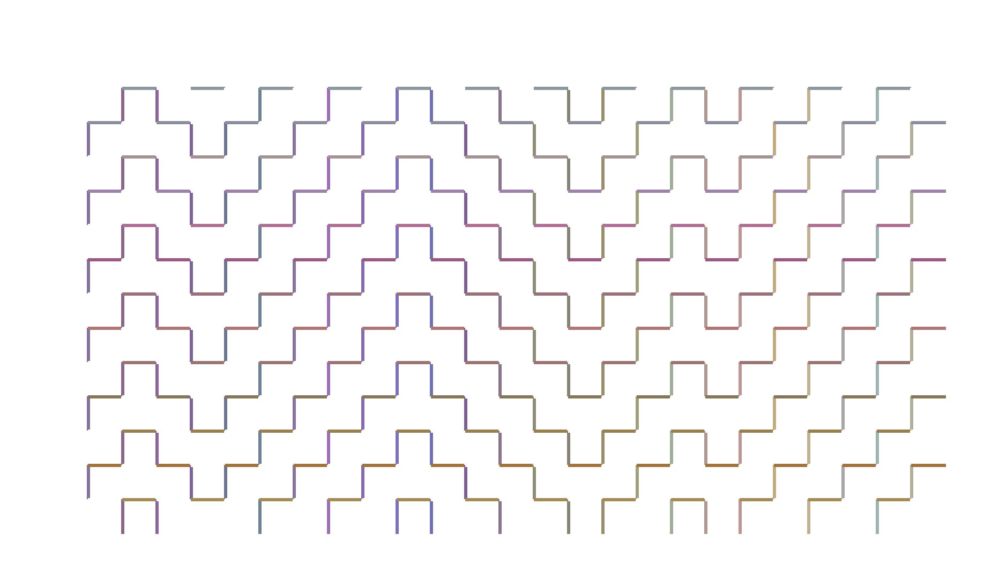
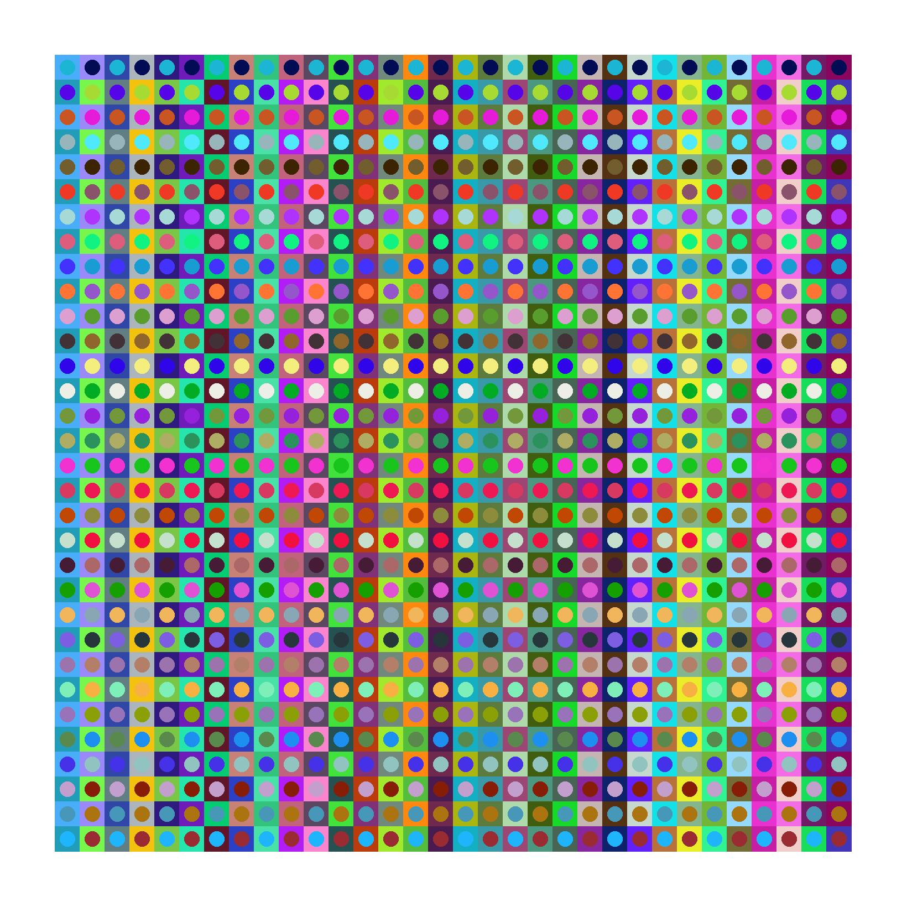
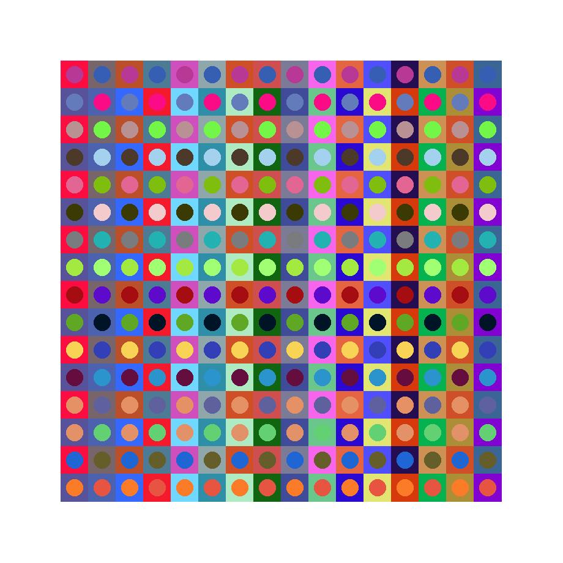
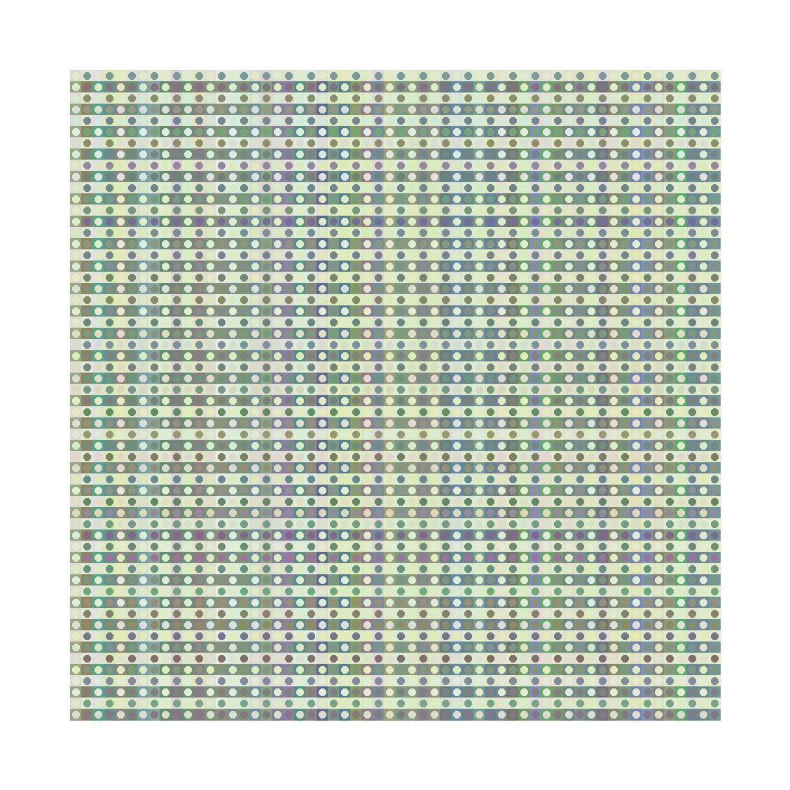

Decidí implementar patrones de hitomezashi basados en texto. La idea consiste en recorrer los símbolos y decidir la posición de inicio de cada línea punteada del patrón. Primero hice una matriz a partir de dos palabras (u oraciones), una para las filas y otra para las columnas. El color se mueve al azar por el espacio RGB.

Pero la computadora puede ser muy rápida y no se molesta con las repeticiones. Así que pude cargar cuentos completos de Borges o Cortázar y usar cada símbolo para modificar alguno de los canales del color de cada celda. Pensé cambiar las líneas rectas por cuadrados y círculos para obtener algo parecido a una obra de Julio Le Parc. Primero probé truncando los colores antes de dibujar.


Después pensé que capaz era mejor tomar el promedio de los cambios producidos por cada símbolo. Los resultados son distintos, por supuesto.
